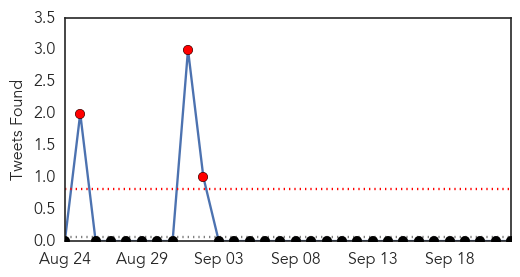
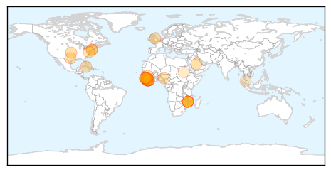

Influenza
30-Day Web Trend
4 alerts, 0 warnings

30-Day Twitter Trend
3 alerts, 0 warnings

Article Locations

Article Confidences

Top Articles:
- 0.993
- Flu arrives early in Bitterroot, immunizations advised
- 0.978
- Time for flu shots once more
- 0.942
- KOTATV.com Rapid City, Black Hills, So Dak. Gillette Sheridan KOTA Territory News
- 0.920
- 'Ventilation Shutdown': The Gruesome Last Resort for Bird Flu-Infected Farms
- 0.912
- Alberta flu expert concerned about lack of immunization
- 0.826
- Appointment-Only Flu Shot Clinics for Skokie Residents
- 0.815
- NanoBio's Genital Herpes Vaccine Demonstrates Efficacy In Guinea Pigs As Both A Prophylactic And A Therapeutic Vaccine
- 0.813
- KFBB.com News, Sports and Weather
- 0.758
- Ghana, Business Advice, Jobs, News, Business Directory, Real Estate, Finance, Forms, Auto
- 0.757
- KBS World Radio
- 0.691
- Turkey farmers brace for possible return of bird flu
- 0.630
- Flu shot clinics will be held in Great Falls - KRTV.com
- 0.596
- Iowa firm gets first USDA license for bird flu vaccine
- 0.589
- HarrisVaccines Receives USDA Conditional License For Avian Influenza Vaccine, RNA
- 0.545
- The Rocky Mount Telegram
Top Tweets:
-
No tweets found for Sep 22, 2015
Ebola
30-Day Web Trend
0 alerts, 0 warnings

30-Day Twitter Trend
0 alerts, 0 warnings

Article Locations
Article Confidences

Top Articles:
- 1.000
- Some health experts say the USA hasn't learned key lessons from Ebola experience
- 1.000
- Ebola more complicated than many doctors realized
- 1.000
- Errors plagued aid workers during Ebola epidemic
- 0.999
- Year of airport screening doesn't catch Ebola
- 0.998
- Consolidated Support for Liberia's Recovery
- 0.998
- Rapid Response to New Ebola Infection in Sierra Leone
- 0.996
- Bungling by UN agency hurt Ebola response
- 0.992
- Google Science Fair Teen Winner Created a Simple Way to Detect Ebola
- 0.991
- Bungling by UN agency hurt Ebola response
- 0.987
- Ebola: ‘Singing the Oxygen Song'
- 0.978
- Investigation finds more evidence of World Health Organization mismanagement of Ebola crisis
- 0.974
- Extensive airport screening to end for Liberian passengers
- 0.971
- Liberia Gets New Public Health Center
- 0.970
- WHO errors undermines fight against Ebola in Kenema « Awoko Newspaper
- 0.967
- AP Investigation: Bungling by UN agency hurt Ebola response
- 0.967
- “Relax Harsh Restrictions,” AFDB President Urges Investors In Liberia
- 0.960
- Bungling by U.N. Agency Hurt Ebola Response
- 0.960
- Bungling by UN agency hurt Ebola response
- 0.954
- More optimism on Ebola situation today
- 0.954
- Liberia Dedicates U$6M Emergency Operating Center
- 0.939
- Sexually transmitted Ebola and other hot topics in the world of STIs
- 0.921
- Nigeria is working on Ebola drug -NIPRD DG
- 0.911
- EVD Outbreak, its effect to the environment - Sierra Leone
- 0.887
- US doctor beats Ebola, will leave hospital
- 0.886
- New Report Finds World Health Organization's Errors, Incompetence Cost Lives During Ebola Outbreak
- 0.885
- 284 Communities at the Epicenter of the Ebola Outbreak Remained Ebola-Free - How Did That Happen? What Can We Learn from Them?
- 0.758
- Sierra Leone: UNFPA Provides Critical Response to Humanitarian Situation Caused by Torrential Rains and Floods in Freetown - Sierra Leone
- 0.745
- Millennium Challenge Corporation approves $300 million for Liberia and Sierra Leone
- 0.672
- Ebola nurse from Blantyre Health Centre speaks about her time in Africa
- 0.638
- Talk: Dr. Javid Abdelmoneim at Trinity College, Dublin, September 24th
- 0.598
- The student who fought Ebola fear with facts and plantain
- 0.595
- Haiz, is KILLING dogs the only way to stop rabies in Malaysia? [UPDATE]
- 0.584
- United Nations World Food Programme - Fighting Hunger Worldwide
Top Tweets:
- 0.899
- 284 Communities at the Epicenter of the Ebola Outbreak Remained Ebola-Free ... - Huffington Post http://t.co/JGH9WYeuQa ebola EVD
- 0.769
- Ebola Virus Disease and ForestFragmentation in Africa Deforestation http://t.co/TJEdIKfJK8
- 0.688
- Bungling by UN agency hurt Ebola response - News24 http://t.co/l71AHRdUaE ebola EVD
- 0.657
- AP Investigation: Bungling by UN agency hurt Ebola response - Newsday http://t.co/7OZPt2FnbK ebola EVD
- 0.637
- Maladie à virus Ebola et fragmentationdesforêts en Afrique déforestation http://t.co/SUl52Q7yJg
- 0.606
- US Government Allocates $38Mln for Developing Ebola Cure - Sputnik International http://t.co/4qsrskoIl8 ebola EVD
- 0.583
- AP Investigation: Too few body bags and bad chlorine marred WHO Ebola response ... - Minneapolis S... http://t.co/KA7qvuhspF ebola EVD
- 0.562
- Avoidable errors undermined efforts to curtail Ebola - Dubuque Telegraph Herald http://t.co/yyu0yYBlF3 ebola EVD